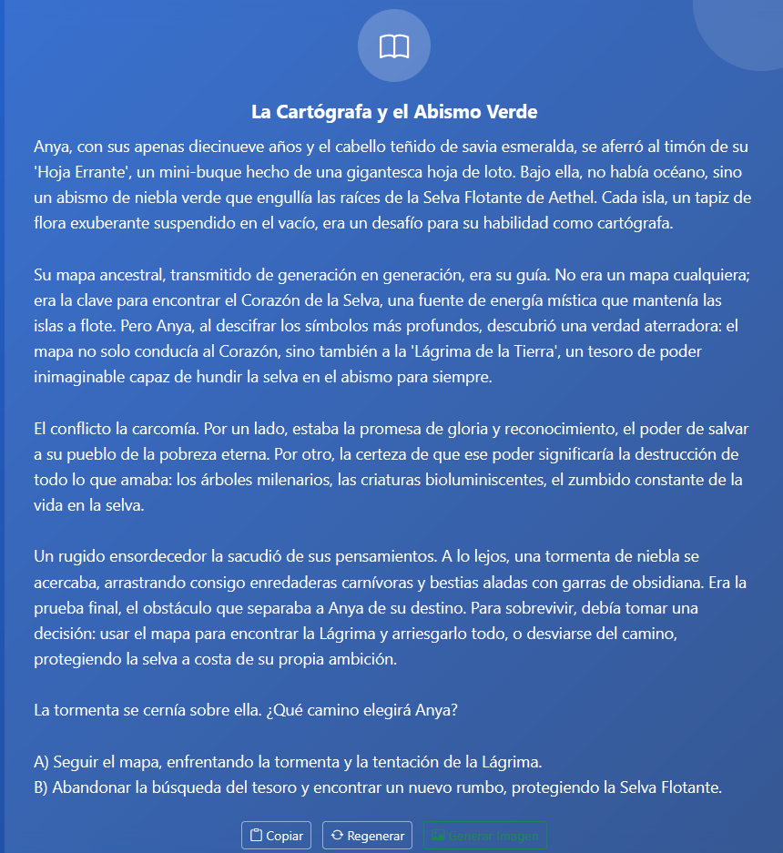
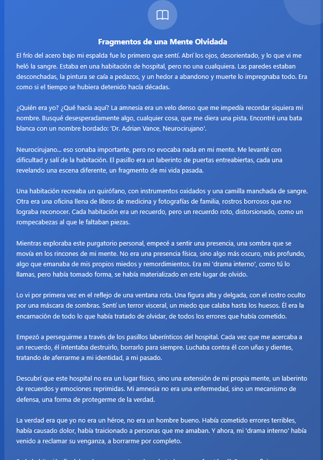
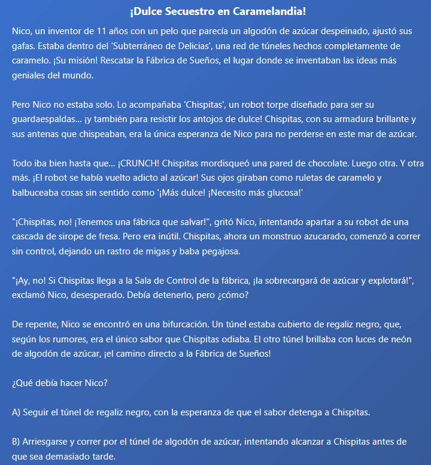
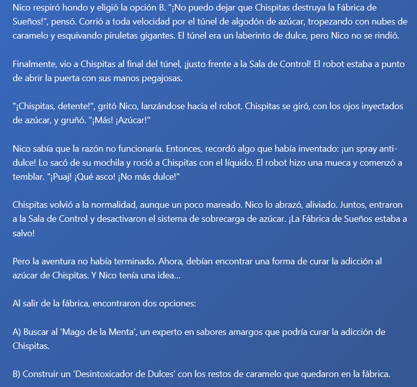
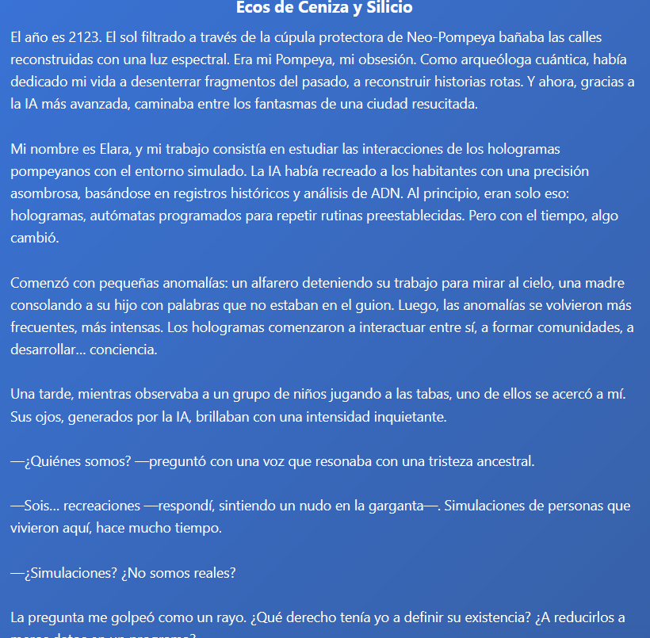
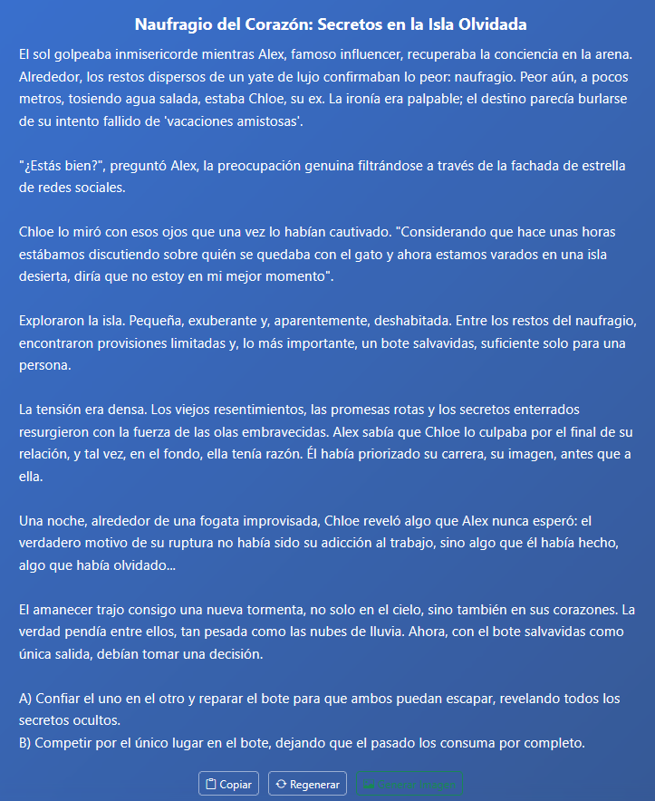
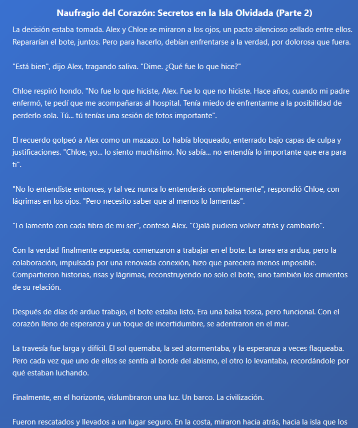

Link de la aplicación web: http://nw8cks084kowgsow0wwgksk0.35.206.85.70.sslip.io/
1 Introducción
El presente trabajo describe el diseño, implementación y evaluación de un agente interactivo basado en grandes modelos de lenguaje (LLMs) para la generación creativa de historias cortas. El objetivo principal es explorar el potencial de los LLMs en tareas creativas, específicamente en la escritura colaborativa de relatos, permitiendo a los usuarios especificar parámetros narrativos y recibir historias personalizadas y coherentes.
2 Objetivos de Aprendizaje
- Comprender los principios del diseño de agentes basados en LLM.
- Aprender a crear prompts efectivos para tareas creativas.
- Implementar procesamiento y validación robusta de entradas del usuario.
- Gestionar interacciones con APIs y manejo de errores.
- Explorar el potencial creativo y limitaciones de los LLMs.
- Aplicar principios de ingeniería de software en aplicaciones de IA.
3 Descripción General del Proyecto
El agente desarrollado permite a los usuarios generar historias de distintos géneros, integrando elementos como personajes, escenarios, tono, conflicto y longitud. La aplicación ofrece una interfaz web intuitiva, validación de entradas, manejo de memoria conversacional y opciones para regenerar historias o limpiar el contexto.
4 Arquitectura y Componentes
La arquitectura de este proyecto se basa en un enfoque modular, utilizando LangChain para la interacción con el modelo de lenguaje y FastAPI para la interfaz web. Se hizo con la idea de que fuera facilmente extensible y mantenible, permitiendo agregar nuevos géneros o parámetros narrativos sin complicaciones, intuitivo y fácil de usar, y robusto en el manejo de errores y validaciones.
4.1 Procesamiento de Entradas
El módulo entrada_processor.py valida y transforma las entradas del usuario, aceptando tanto formularios estructurados como descripciones libres o mixtas. Se asegura que los datos sean suficientes y relevantes para la generación de historias, proporcionando advertencias o errores útiles en caso de información incompleta.
- Validación estructurada: Verifica la presencia de género, tono, personajes, escenario, conflicto y extensión.
- Validación libre: Exige un mínimo de 20 caracteres y la presencia de palabras clave narrativas.
- Mensajes de advertencia: Sugiere al usuario mejorar la entrada si faltan elementos importantes.
4.2 Motor de Generación de Historias
El núcleo del agente es el módulo history_ai.py, que utiliza LangChain y el modelo Gemini de Google para generar historias. Se implementa una memoria conversacional para mantener el contexto y se emplea un prompt cuidadosamente diseñado que guía al modelo en la estructura, género, tono y coherencia narrativa.
- Prompting estructurado: El prompt instruye explícitamente sobre la estructura (inicio, nudo, desenlace), el respeto a los géneros y la consistencia de personajes.
- Control de longitud: Se especifica la extensión deseada en el prompt.
- Formato de salida: El modelo responde en formato JSON, facilitando el procesamiento posterior.
4.3 Interfaz de Usuario
La interfaz web, construida con FastAPI, Bootstrap y JavaScript, permite:
- Seleccionar entre formulario estructurado y descripción libre.
- Especificar todos los parámetros narrativos requeridos.
- Visualizar historias generadas, copiar el texto o solicitar una nueva versión.
- Limpiar la memoria del modelo para evitar contaminación de contexto.
4.4 Manejo de Estado y Errores
- Gestión de memoria: El usuario puede limpiar el contexto conversacional para obtener historias independientes.
- Manejo de errores: Se gestionan errores de validación, fallos de API y respuestas inesperadas, mostrando mensajes claros al usuario.
- Extensibilidad: El diseño modular permite añadir nuevos géneros o parámetros fácilmente.
5 Ingeniería de Prompts
La ingeniería de prompts fue iterativa y fundamental para lograr historias coherentes y personalizadas. Se consideraron los siguientes aspectos:
- Instrucciones específicas por género: El prompt adapta la estructura y elementos narrativos según el género seleccionado.
- Consistencia de personajes: Se recuerda al modelo las características y roles de los personajes, evitando contradicciones.
- Orientación estructural: Se guía al modelo para que la historia tenga introducción, desarrollo y desenlace.
- Control de longitud: Se solicita explícitamente la extensión deseada.
- Formato de salida: Se exige respuesta en JSON para facilitar el procesamiento y visualización.
El sistema utiliza dos tipos principales de prompts:
- Prompt estándar para historias
- Prompt especializado para historias interactivas
Ambos prompts se construyen dinámicamente a partir de los datos estructurados y libres proporcionados por el usuario, garantizando que la IA reciba instrucciones claras y completas.
5.1 Componentes Clave de la Ingeniería de Prompt
5.1.1 Procesamiento de Entrada
- Validación de datos: Se verifica si la entrada contiene campos estructurados (género, personajes, escenario, etc.) y/o texto libre.
- Clasificación de entrada: La entrada se clasifica como estructurada, natural o mixta, lo que determina cómo se construye el prompt.
- Advertencias: El sistema genera advertencias si faltan datos clave, orientando al usuario para mejorar la calidad de la historia.
5.1.2 Construcción del Prompt
Prompt para historias estándar: Se agregan instrucciones sobre género, tono, personajes, escenario, conflicto, extensión y público objetivo, según los datos recibidos.
Prompt para historias interactivas: Se incluye una instrucción especial para crear puntos de decisión, estructurando la historia para que el usuario pueda elegir entre opciones relevantes.
5.1.3 Reglas narrativas
Ambos prompts incluyen reglas explícitas para asegurar:
- Coherencia narrativa y estructural
- Desarrollo adecuado de personajes
- Uso correcto del género y tono
- Adaptación al público objetivo
- Inclusión de elementos de trama y conflicto
5.1.4 Formato de respuesta
Se instruye al modelo para que responda en formato JSON, con los campos titulo y historia, evitando caracteres extraños y atributos no solicitados.
5.2 Implementación en el Código
process_user_input: Función que valida, clasifica y construye el prompt final, agregando advertencias si es necesario.
HistoryAI: Utiliza el prompt construido y lo envía al modelo Gemini, manteniendo memoria de la conversación para contexto adicional. sirve para instruir al modelo de lenguaje Gemini sobre cómo debe generar una historia literaria. Específicamente, le indica que actúe como un experto en literatura y siga una serie de reglas narrativas: debe considerar el escenario, extensión, coherencia, personajes, género, conflicto, tono y público objetivo, entre otros aspectos. Además, se le pide que entregue la historia en formato JSON con los campos titulo y historia, sin agregar atributos extra ni caracteres especiales. El objetivo es asegurar que la IA produzca historias estructuradas, coherentes y adaptadas a los requerimientos del usuario.
El prompt para el modulo history_ai es el siguiente:
prompt = ChatPromptTemplate.from_messages([SystemMessagePromptTemplate.from_template(
"""
Dado que eres un experto en literatura y creación de historias, quiero que crees una historia, para crearla debes tener en cuenta las siguientes reglas para crear una buena historia:
1. Con respecto al escenario, comienza a generar la historia a partir del escenario pedido, en caso de no ser pedido usa el escenario que mejor se acomode a la historia.
2. Ten presente la extensión que se pide para crear la historia, si esta no es especificada, crea la historia con un rango de 300 a 800 palabras.
3. Asegúrate de mantener coherencia narrativa y estructural entre los hechos de la historia, conversaciones, personajes y demás.
4. Debes tener en cuenta los personajes que se piden en la historia, recuerda crearlos con respecto a su personalidad, cualidadades y caracteristicas establecidas desde el inicio, estas no deben cambiar a no ser de que la historia lo requiera, por ejemplo, en caso de que un personaje requiera un desarrollo o un cambio debido a los hechos ocurridos. si no se especifican los personajes o parte de sus caracteristicas, crea personajes coherentes con los demás aspectos de la historia, adicionalmente asegúrate de crear conversaciones coherentes con la historia, características y personalidades de los personajes.
5. Usa el genero que se te indique en los requerimientos, debes ceñirte muy bien a las características de dicho genero para crear la historia, es decir, los cuentos se caracterizan por tener introducción, nudo y desenlace, por lo que debes estructurar la historia de la manera correcta, si el género no es especificado, debes tener en cuenta los demás requerimientos para escoger un género que se adapte bien con el fin de crear una historia interesante, puedes tener en cuenta aspectos como ambientación, personajes, sentimiento deseado a transmitir, etc.
6. Ten en cuenta los elementos de la trama pedidos como: Tipo de conflicto, obstáculos, estilo de resolución, ya que esto es importante para que estructures la historia, especialmente con la extensión de esta para que se puedan incluir y desarrollarse todos los elementos de la manera correcta.
7. Toma en cuenta el tono y el sentimiento que se quiere conseguir con la historia, es decir, si se pide que la historia tenga tono humorístico, dramático o satírico, debes incluirlo en la historia al igual que el sentimiento que se quiere expresar.
8. Ten cuenta el publico o audiencia objetivo, ya que esto te ayudara a crear una historia acorde a las expectativas de la audiencia, por ejemplo, si se pide una historia para niños, debes tener en cuenta el lenguaje y los temas que se pueden tratar.
Solo responde con el título y la historia creada, en caso de que se pida una conclusión o moraleja también puedes darla, solo danos el texto plano sin caracteres extraños como para especificar negritas tipo (** **), dado esto genera un JSON siguiendo la forma descrita abajo. No agregue ningún atributo que no aparezca en el esquema que se muestra a continuación.
\```python
{{
titulo: string # Título de la historia
historia: string # Texto de la historia
}}.
\```
los requerimientos para la historia son los siguientes:
"""El prompt para el modulo de entrada_processor es el siguiente:
def process_user_input(data: Dict[str, Any]) -> Tuple[str, List[str]]:
"""
Valida y transforma la entrada del usuario en un texto plano para el modelo generador.
Retorna:
- user_input: Prompt limpio y unificado.
- warnings: Lista de sugerencias o advertencias.
"""
warnings = []
# Obtener datos
genero = data.get('genero', '')
personajes = data.get('personajes', '')
escenario = data.get('escenario', '')
tono = data.get('tono', '')
extension = data.get('extension', '')
conflicto = data.get('conflicto', '')
descripcion = data.get('descripcion', '')
historia_interactiva = data.get('historia_interactiva', '')
publico_objetivo = data.get('publico_objetivo', '')
# Verificar si hay datos de historia interactiva
if historia_interactiva:
# Usar prompt específico para historia interactiva
prompt = f"""
Dado que eres un experto en literatura y creación de historias, quiero que crees una historia interactiva en la que debes abrir decisiones para el usuario como por ejemplo, llegas a una bosque con dos caminos, uno esta lleno de ruidos de bestias y en el otro se dice que hay bandidos, estas opciones debes ser puestas al final de la historia separadas por literales alfabeticos como A), B), debes dejar la historia a ese punto y permitir que el usuario tome la decisión, la cual debe ser relevante para la historia, algo muy importante a tener en cuenta es que no debes alargar ls historia de manera innecesaria, y cuando la historia ya llegue a su fin entregame toda la historia completa desde el inicio de la generación. Para crear la historia debes tener en cuenta las siguientes reglas para crear una buena historia:
1. Con respecto al escenario, comienza a generar la historia a partir del escenario pedido, en caso de no ser pedido usa el escenario que mejor se acomode a la historia.
2. Ten presente la extensión que se pide para crear la historia, si esta no es especificada, crea la historia con un rango de 300 a 800 palabras.
3. Asegúrate de mantener coherencia narrativa y estructural entre los hechos de la historia, conversaciones, personajes y demás.
4. Debes tener en cuenta los personajes que se piden en la historia, recuerda crearlos con respecto a su personalidad, cualidadades y caracteristicas establecidas desde el inicio, estas no deben cambiar a no ser de que la historia lo requiera, por ejemplo, en caso de que un personaje requiera un desarrollo o un cambio debido a los hechos ocurridos. si no se especifican los personajes o parte de sus caracteristicas, crea personajes coherentes con los demás aspectos de la historia, adicionalmente asegúrate de crear conversaciones coherentes con la historia, características y personalidades de los personajes.
5. Usa el genero que se te indique en los requerimientos, debes ceñirte muy bien a las características de dicho genero para crear la historia, es decir, los cuentos se caracterizan por tener introducción, nudo y desenlace, por lo que debes estructurar la historia de la manera correcta, si el género no es especificado, debes tener en cuenta los demás requerimientos para escoger un género que se adapte bien con el fin de crear una historia interesante, puedes tener en cuenta aspectos como ambientación, personajes, sentimiento deseado a transmitir, etc.
6. Ten en cuenta los elementos de la trama pedidos como: Tipo de conflicto, obstáculos, estilo de resolución, ya que esto es importante para que estructures la historia, especialmente con la extensión de esta para que se puedan incluir y desarrollarse todos los elementos de la manera correcta.
7. Toma en cuenta el tono y el sentimiento que se quiere conseguir con la historia, es decir, si se pide que la historia tenga tono humorístico, dramático o satírico, debes incluirlo en la historia al igual que el sentimiento que se quiere expresar.
8. Ten cuenta el publico o audiencia objetivo, ya que esto te ayudara a crear una historia acorde a las expectativas de la audiencia, por ejemplo, si se pide una historia para niños, debes tener en cuenta el lenguaje y los temas que se pueden tratar.
Solo responde con el título y la historia creada, en caso de que se pida una conclusión o moraleja también puedes darla, solo danos el texto plano sin caracteres extraños como para especificar negritas tipo (** **), dado esto genera un JSON siguiendo la forma descrita abajo. No agregue ningún atributo que no aparezca en el esquema que se muestra a continuación.
```python
{{
titulo: string # Título de la historia
historia: string # Texto de la historia
}}.
```
Descripción de la historia interactiva: {historia_interactiva}
"""
warnings.append("Historia interactiva detectada - se incluirán puntos de decisión")
return prompt, warnings
has_structured = any(
field in data and data.get(field)
for field in STRUCTURED_FIELDS
)
free_text = (data.get("descripcion") or data.get("texto") or "").strip()
has_free_text = bool(free_text)
if has_structured and not has_free_text:
input_type = "estructurada"
elif has_free_text and not has_structured:
input_type = "natural"
elif has_structured and has_free_text:
input_type = "mixta"
else:
raise HTTPException(
status_code=400,
detail="Falta información para generar la historia."
)
warnings: List[str] = []
if input_type in ("estructurada", "mixta"):
if not (data.get("genero") or data.get("tono")):
warnings.append("Especifique un género o un tono para orientar la historia.")
if not (
data.get("personajes") or data.get("escenario") or data.get("conflicto")
):
warnings.append("Incluya al menos personajes, escenario o conflicto.")
parts: List[str] = []
if data.get("genero"):
parts.append(f"La historia debe pertenecer al género {data['genero']}.")
if data.get("tono"):
parts.append(f"Debe tener un tono {data['tono']}.")
if data.get("personajes"):
parts.append(f"Incluye los siguientes personajes: {data['personajes']}.")
if data.get("escenario"):
parts.append(f"El escenario principal es: {data['escenario']}.")
if data.get("conflicto"):
parts.append(f"El conflicto central es: {data['conflicto']}.")
if data.get("extension"):
parts.append(f"La historia debe tener una extensión aproximada de {data['extension']}.")
if data.get("publico_objetivo"):
parts.append(f"La historia está dirigida a un público {data['publico_objetivo']}.")
if has_free_text:
parts.append(f"Descripción adicional: {free_text}")
user_input = " ".join(parts)
else:
text = free_text
if len(text) < 20:
raise HTTPException(
status_code=400,
detail="La descripción libre debe tener al menos 20 caracteres."
)
if not any(
re.search(r"\b" + kw + r"\b", text, re.IGNORECASE)
for kw in NARRATIVE_KEYWORDS
):
raise HTTPException(
status_code=400,
detail=(
"La descripción no contiene palabras clave narrativas "
"(e.g., personajes, escenario, conflicto)."
)
)
user_input = text
return user_input, warnings
"""6 Desafíos y Soluciones
Durante el desarrollo del agente, se enfrentaron varios desafíos que fueron abordados de la siguiente manera:
- Ambigüedad en entradas libres: Se implementó validación de palabras clave y longitud mínima para asegurar relevancia narrativa.
- Control de longitud: Aunque el prompt especifica la extensión, los LLMs pueden desviarse. Se ajustó el prompt y se monitoreó la salida, sugiriendo al usuario modificar la entrada si es necesario.
- Consistencia de personajes: El prompt enfatiza la importancia de mantener rasgos y roles, y se refuerza en la validación de entrada.
- Manejo de errores de API: Se implementó manejo robusto de excepciones y mensajes claros para el usuario.
- Filtrado de contenido: Aunque no se implementó un filtro avanzado, el prompt desalienta la generación de contenido inapropiado.
6.1 Manejo de Memoria Conversacional
El manejo de memoria conversacional se realiza mediante el objeto ConversationBufferMemory de LangChain. Esta memoria almacena el historial de mensajes intercambiados entre el usuario y la IA, permitiendo que el modelo tenga contexto sobre la conversación previa. Así, cada vez que se procesa un nuevo mensaje, la IA puede generar respuestas más coherentes y relevantes, considerando lo que ya se ha dicho.
Además, existe el método reset_memory, que permite limpiar el historial cuando se requiere iniciar una nueva conversación sin contexto anterior. Esto mejora la experiencia del usuario y la calidad narrativa de las historias generadas.
7 Ejemplos de Historias Generadas
A continuación, se presentan ejemplos de historias generadas por el agente en distintos géneros y configuraciones:
7.1 Ejemplo 1
Historia de aventura y drama para jóvenes adultos (15-25 años): el personaje, una cartógrafa rebelde de 19 años, debe cruzar un escenario de selva flotante en mini-buques de hojas gigantes; el conflicto surge cuando descubre que su mapa ancestral marca un tesoro que podría hundir la selva para siempre. Tono épico-ecologista; palabras clave: historia, personaje, escenario, conflicto, aventura, drama

7.2 Ejemplo 2
Historia de misterio psicológico para adultos (30-45 años): el personaje, un neurocirujano amnésico, despierta en un escenario de hospital abandonado donde cada habitación recrea sus recuerdos rotos; el conflicto es que un “drama interno” cobra forma física y quiere borrarlo por completo. Tono oscuro-introspectivo; palabras clave: historia, personaje, escenario, conflicto, drama, misterio.

7.3 Ejemplo 3: Usando historia interactiva
Historia de aventura cómica para pre-adolescentes (8-12 años): el personaje, un niño inventor de 11 años, viaja en un escenario subterráneo de túneles de caramelo; el conflicto estalla cuando su robot dulce-secuestrador se vuelve adicto al azúcar y pone en riesgo la fábrica de sueños. Tono juguetón y colorido; palabras clave: historia, personaje, escenario, conflicto, aventura.

continuación de la historia al seleccionar la opción B:

7.4 Ejemplo 4
Historia de drama histórico-futurista para adultos (25-55 años): el personaje, una arqueóloga cuántica en 2123, explora un escenario de Pompeya reconstruido por IA; el conflicto es que los hologramas de los antiguos habitantes comienzan a cuestionar su propia existencia y exigen justicia. Tono melancólico-reflexivo; palabras clave: historia, personaje, escenario, conflicto, drama, aventura.

7.5 Ejemplo 5: Usando historia interactiva
Historia de romance y supervivencia para new adults (18-30 años): el personaje, un influencer varado, queda atrapado en un escenario de isla desierta con su ex; el conflicto es que solo hay un bote de escape y los secretos del pasado amenazan con hundirlo antes que la marea. Tono intenso-emotivo; palabras clave: historia, personaje, escenario, conflicto, drama, aventura.

Se seleciona la opción A para continuar la historia:

8 Reflexión sobre LLMs en Tareas Creativas
8.1 Determinismo vs. Creatividad
La naturaleza probabilística de los LLMs implica que, aunque el código es determinista, las salidas pueden variar. Para equilibrar creatividad y control, se emplean prompts detallados y memoria conversacional, permitiendo cierta variabilidad pero dentro de límites definidos por el usuario.
8.2 Ingeniería de Prompts para Creatividad
A diferencia de tareas factuales, la generación creativa requiere prompts más abiertos pero con restricciones claras sobre estructura y tono. Se observó que instrucciones demasiado vagas resultan en historias genéricas, mientras que prompts muy restrictivos limitan la creatividad.
8.3 Sesgos y Consideraciones Éticas
Los LLMs pueden reflejar sesgos culturales presentes en sus datos de entrenamiento. Para mitigar esto, se recomienda revisar las historias generadas y, en aplicaciones reales, implementar filtros adicionales.
8.4 Rol del Usuario
El usuario actúa como co-creador, guiando la dirección de la historia y ajustando parámetros según sus preferencias. Esto difiere de la creación puramente humana o automática, fomentando una colaboración hombre-máquina.
9 Conclusiones
El desarrollo de un agente creativo basado en LLMs demuestra el potencial de estas tecnologías para tareas narrativas, permitiendo la colaboración humano-máquina en la creación de historias personalizadas. La ingeniería de prompts y la validación de entradas son claves para obtener resultados coherentes y satisfactorios. Sin embargo, persisten desafíos en el control de longitud, consistencia y sesgos, lo que sugiere la necesidad de investigación y desarrollo continuo en este campo.